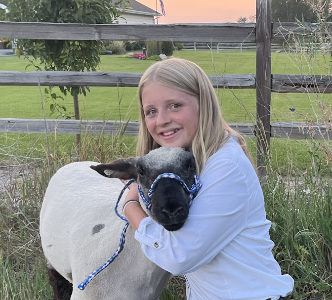
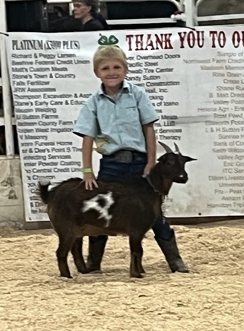
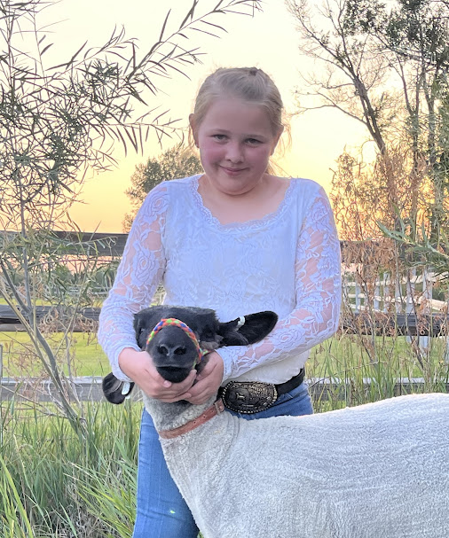

Club Meeting days and times. During the school year I was thinking that the older kids could just ride the bus home to my house or meet around 4 at my house. The buses (Middle school/High school bus and Junior Hight bus) drop my kids off between 3:55 and 4:05 usually and we would do our best to be done by 5. During the summer we will meet every other week or so and do club weigh-ins and shomanship practice. We can also have some presentations if needed. * are the days that I am counting as club meetings for sure and we can talk about adding others as needed. Here is a tentative schedule for our summer meetings. We will adjust where needed. Your children need a minimum of 7 club meetings that they attend as well as their record books finished and submitted in order to show at the fair. If these do not work, talk to me personally and we will see what we can do to make things work.
Meeting Schedule
-
March
- *Tuesday, 10th- Club Meeting at Cook’s at 4:00 – Presentations
- 12th- Livestock Clinic in the High School Ag Building 5:30 – 8:30
- *Tuesday, 24th- Club Meeting at Cook’s at 4:00 – Presentations
-
April
- Saturday, - Livestock Clinic at Valley Wide 9:00-12:00
- *Tuesday, 7th- Club Meeting at Cook’s at 4:00 – Presentations
- *Tuesday, 28th- Club Meeting at Cook’s at 4:00 – Presentations
-
May
- Barbeque at Cook’s – Presentations if needed
-
June
- *Saturday, June 6th- Morning 4-H Initial lamb weigh in and showmanship practice (most likely around 8am)
- *Week of the 15th- Club weigh in and showmanship practice Look into rough shearing and deworming lambs.
- *Week of the 29th- Club weigh in and showmanship practice
-
July
- *Week of the 6th or 13th- Club weigh in and showmanship practice Look into rough shearing and deworming lambs. *If needed sometime before the week of the 20th Shannon or I could meet and help with record books if needed for another meeting or to get them done.
- *Week of the 20th- Record Books will be due to leaders
- *Week of the 27th- Club weigh in and showmanship practice
- Middle of the month recruit potential buyers and share information about the Livestock Sale with them. Towards the end of the month buyer pictures will be due to Shay. Can be taken anytime during the season, just make sure the lamb and kids look good.
-
August
- August 3rd-5th- Rexburg Stake Youth Trek to Seller’s Creek. All youth 11 and up.
- Week of the 3rd-Rough Shear lambs
- *Saturday, 8th- Set up pens at the fairgrounds (most likely around 8am and done by 9am)
- Week of the Tuesday, August 11th-15th- Fair
- Slick Shear lambs, it is best to do this before the fair if at all possible. You are welcome to use mine or I can get you a link to what I have.
- August 10 - Consider having kids do the Demonstration Contest (3:00 - 4:00) and the Cake, Cookie, and Pie Contest (4:30). Your children can have the opportunity for cash prizes with these and it can be a lot of fun. There are also lots of options for the home goods building if anyone wants to do that as well. Also, if they are little entrepreneur’s, there is that kids day at the fair where they can have a free booth and sell things if they would like. I can’t remember what day that is, if they are doing it again this year. As long as it is not show day, you should be good if they have things they would like to sell. You would need to get them registered before the fair for this as well. Just some extra things to consider.
- Tuesday, 11th- Early evening (around 5) 4-H Final Weigh in and Ultrasounds Basically they take a 10 second ultrasound picture of the back of your sheep right after we get done with final weigh in at the fairgrounds. And the only thing that will affect how well that image is, is your feed and exercise regimen.
- Thursday, 13th- Lamb Show (8-5) Saturday, 15th- Livestock Auction (8-2)
- Saturday, 15th- Load animals on trailers and clean up (5-7) Around 5 clean up pens and load lambs on the trailer. If you are considering buying back your ewes or another ewe, you will need to get on the list the first part of the week with Shay so that there is no confusion on Saturday.